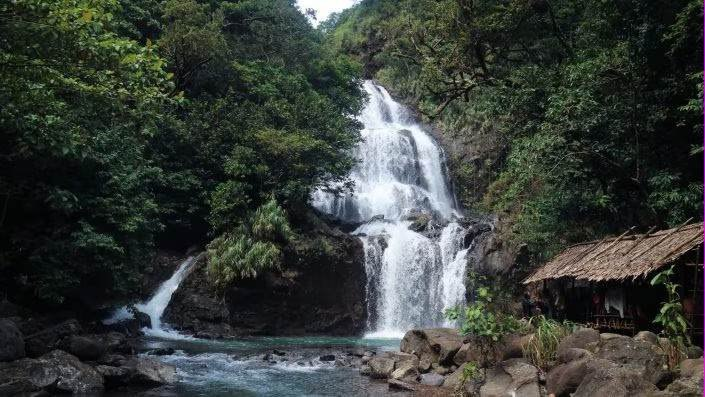
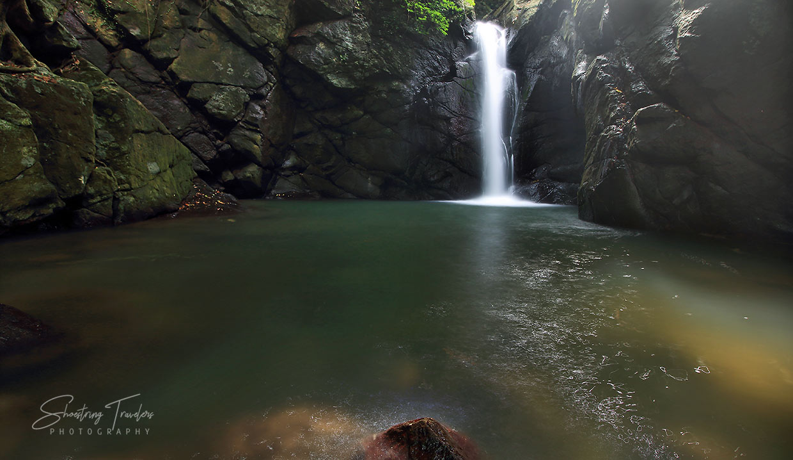
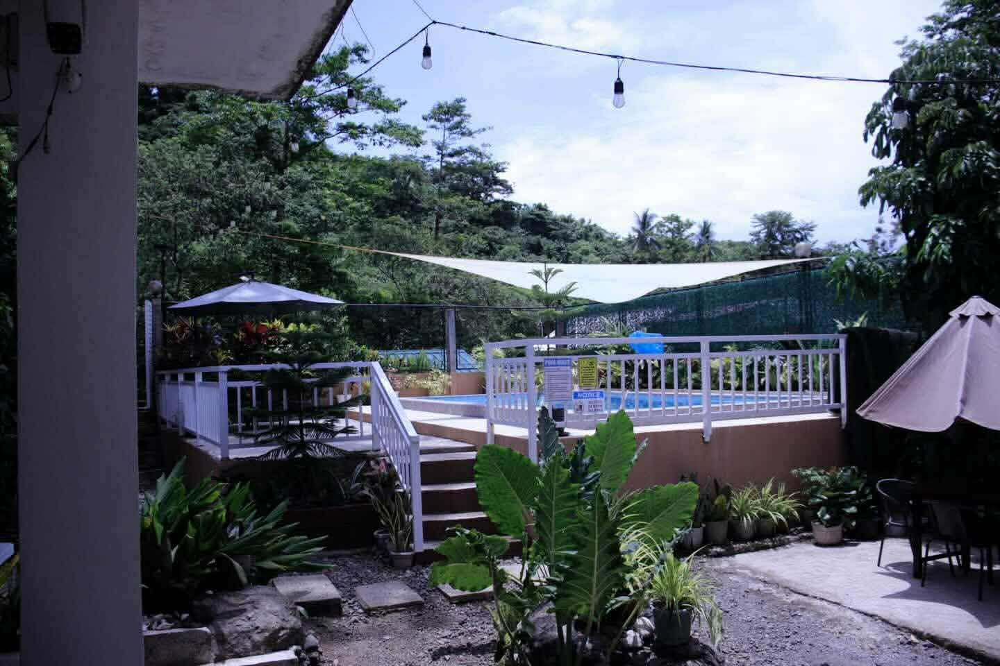
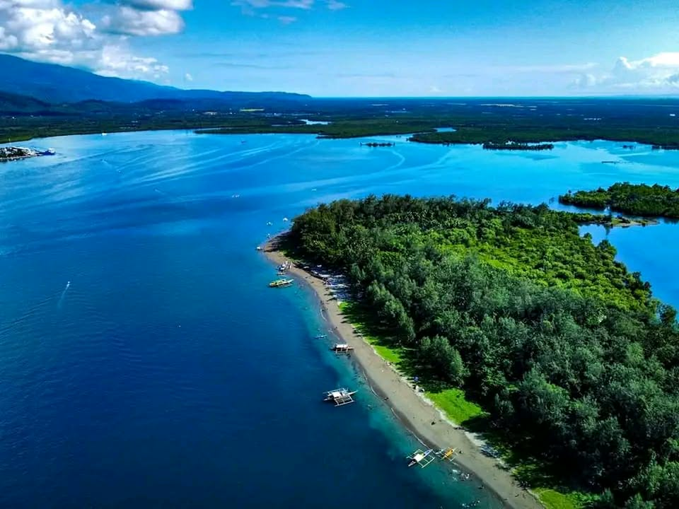
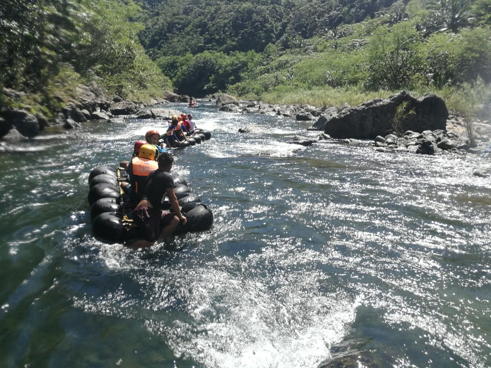
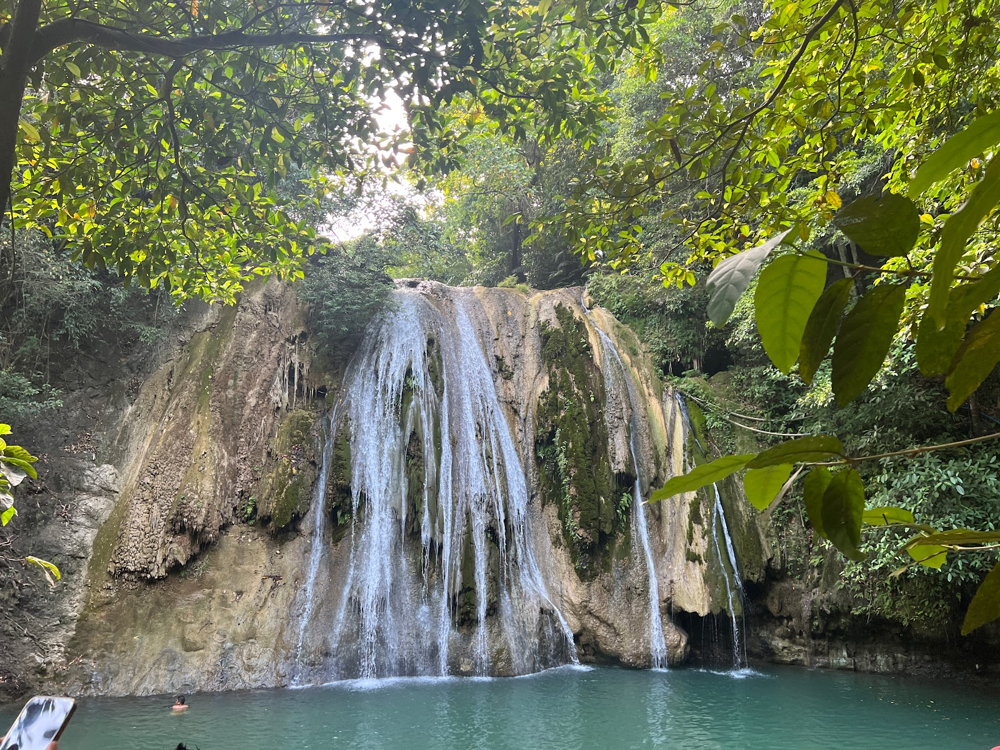

Natural beauty through waterfalls and rivers

A refreshing waterfall destination known for its cool waters and peaceful natural surroundings.
Explore

A tranquil riverside garden destination offering relaxing views and a peaceful ambiance.
Explore
A beautiful island getaway featuring clear waters, sandy shores, and stunning coastal scenery.
Explore
A calm and refreshing river destination perfect for swimming, picnics, and family outings.
Explore
A hidden waterfall surrounded by lush greenery, offering a cool and relaxing natural escape.
Explore